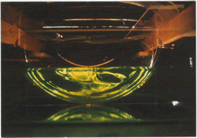

Arrested Ekman LayersThis was my PhD thesis project - working with Dr. Peter Rhines. |
 |
The boundary layer of rotating, stratified flow along a slope may be strongly modified from the standard Ekman layer on a flat surface. This is because Ekman transport up- or down the slope advects the density gradient, which gives rise to a buoyancy force which opposes the Ekman transport. Over a time proportional to f/(N*slope angle)^2 the Ekman transport is "shut down" by the buoyancy force. The growing tilt of near-boundary isopycnals allows the thermal-wind shear to replace turbulent stress as the mechanism slowing the along-slope flow in the boundary layer. The surprising result is that the "Arrested Ekman Layer" tends toward a state of zero boundary stress. This theory was developed as a result of observations of laboratory experiments (MacCready and Rhines 1991), and later explored for the turbulent case with a 1-D numerical model (MacCready and Rhines 1993). Such boundary physics, and their association with boundary mixing, is reviewed in Garrett et al. (1993). These boundary layer effects have been observed in various coastal and abyssal locations, and are most prominent in upwelling-favorable flows. One important place where the arrested Ekman layer physics does NOT apply in general is in Deep Western Boundary Currents (DWBC's) such as the Denmark Strait Overflow as it flows around Greenland and the Labrador Sea. In this current there is almost no stratification on the slope, because the current is fed by a source of small density range. The reasons for the observed longevity of such currents may instead be explained by the enormous reservoir of potential energy they carry relative to their kinetic energy (MacCready 1994). Only the kinetic energy is tapped by the bottom boundary layer dissipation.
REFERENCES
- MacCready, P., and P. B. Rhines 1991: Buoyant inhibition of Ekman transport on a slope and its effect on stratified spin-up, J. Fluid Mech., 223, 631-661.
- MacCready, P., and P. B. Rhines 1993: Slippery Bottom Boundary Layers on a Slope, J. Phys. Oceanogr., 23, 5-22.
- Garrett, C., P. MacCready, and P. B. Rhines 1993: Boundary Mixing and Arrested Ekman Layers: Rotating, Stratified Flow Near a Sloping Boundary, Ann. Rev. Fluid Mech., 25, 291-323.
- MacCready, P. 1994: Frictional Decay of Abyssal Boundary Currents, J. Mar. Res., 52, 197-217.